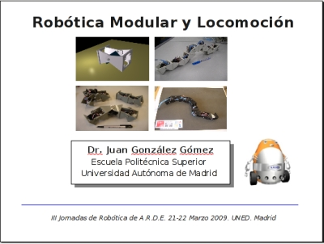

Los días 21 y 22 de Marzo se celebraron las III Jornadas de Robótica de A.R.D.E, en el campus de las Rozas de la UNED. Me invitaron a dar una charla sobre “Robótica modular y locomoción“, donde hice demostraciones de algunos de mis robots modulares.
Las transparencias de la charla (en PDF y OpenOffice) así como los vídeos que mostré están publicados en el wiki.
Tanto la charla oficial de la tesis en buen inglés británico, como la versión para todo público, ambas son recomendables para quien aun no las haya presenciado, puesto que combina dos elementos: una tesis interesante + diversión. De escala 1 a 10, esto se gana un 11… es decir, una pasada !!
Muchísimas gracias Chris! 😀